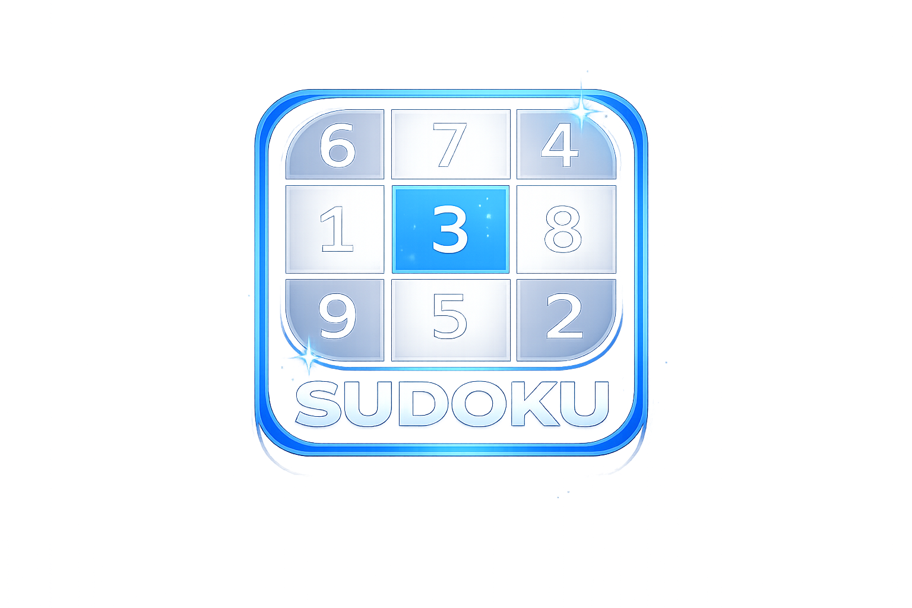

Moje hry
12
Počet uložených dohraných her.
Statický náhled bez databáze (čistě HTML). Ukázková data jsou smyšlená; přepínač motivů funguje.
Hrajte, měřte čas, sledujte statistiky a porovnejte se s ostatními hráči.
Spustit hru
12
Počet uložených dohraných her.
02:41
Nejrychlejší dokončená hra.
Logická hra s čísly 1 až 9. Každé číslo smí být v řádku, sloupci a bloku 3×3 jen jednou.
Číst více →